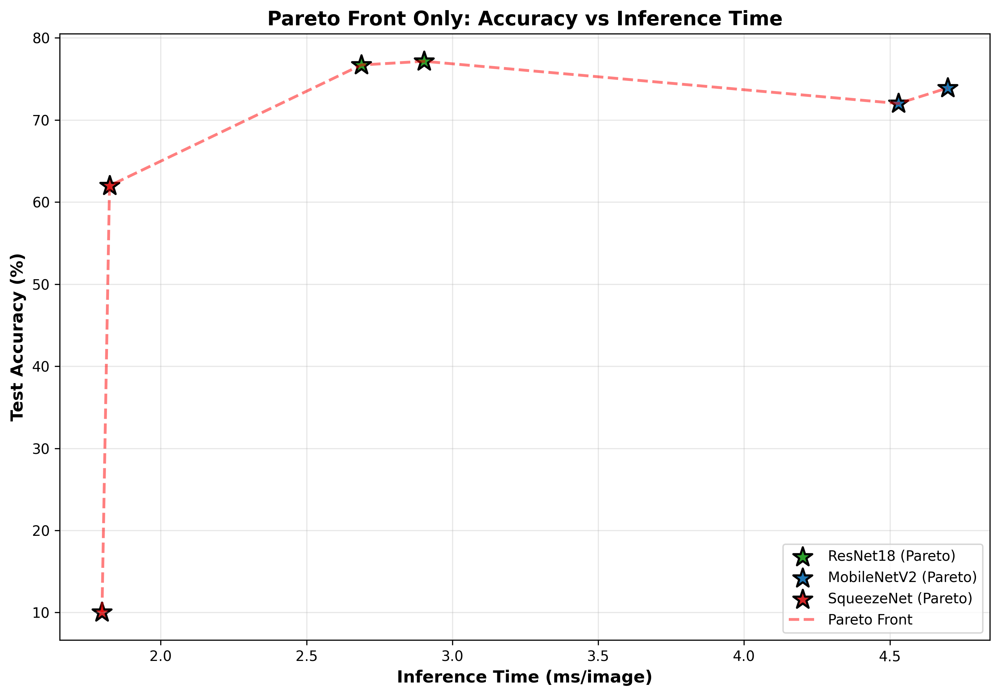
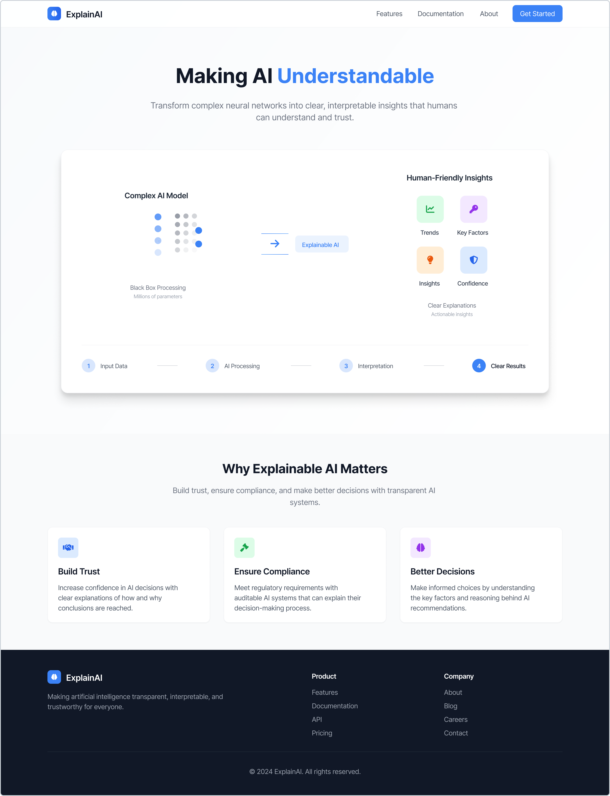
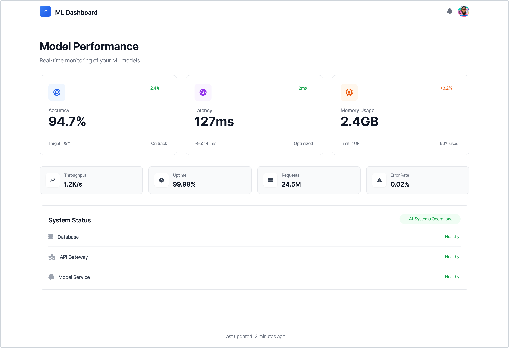

Human-centred AI evaluation

Overview
My MSc research focuses on explainable AI (XAI) and human-centred evaluation of AI systems. The work explores how we can measure, communicate, and design for AI behaviour in ways that support user trust and informed decision-making. I combine quantitative evaluation (metrics, experiments) with a design lens: how do we present model behaviour so that stakeholders — technical and non-technical — can understand trade-offs and limitations?
Research themes
- Explainability — How to communicate model decisions, confidence, and limitations to users. Designing interfaces and narratives that make AI behaviour understandable without requiring technical expertise.
- Evaluation metrics — Using metrics (accuracy, precision, recall, latency, resource usage) to inform design decisions. Understanding which metrics matter for different user scenarios and how to surface them in product contexts.
- Deployment trade-offs — Analysing trade-offs between accuracy, speed, and resource constraints. Producing recommendations and visualisations that help product and engineering teams make informed choices about model selection and configuration.
- Human-centred design — Ensuring evaluation frameworks account for user needs, context, and trust. Connecting technical evaluation to UX outcomes.


Relevance to design
This research directly informs how I approach AI product design. Evaluation isn't just a technical exercise — it's a design input. Understanding model behaviour, metrics, and trade-offs helps me design interfaces that surface the right information, set appropriate expectations, and build trust. It also grounds design decisions in data, rather than assumption.
Outcomes
Delivered research outputs including experiments, visualisations, and recommendations. The work contributes to a design practice that is informed by both qualitative user research and quantitative evaluation of AI systems.